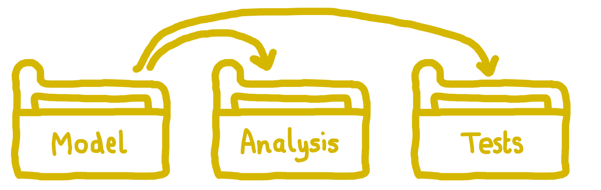

Structuring our model as a package
Choose your language:
🔗 Reproducibility guidelines:
- NHS Levels of RAP (🥈): Code is well-organised following standard directory format. > * NHS Levels of RAP (🥇): Code is fully packaged.
Building our simulation model as a package has several advantages…
- The model is installed in our environment and can then be easily used anywhere else in our directory (or even from other directories) without needing to specify a system path.
- It encourages us to create a well-organised repository following standardised established package structures.
- It helps keep the model and analysis code separate, improving maintainability, reusability, and reducing the risk of unintended side effects.
- It supports automated testing frameworks which can verify functionality (Tests).

Create the Python package structure
First, let’s create the basic directory structure for our simulation package.
1. Create folder. Create a folder called simulation/ in your project directory.
mkdir simulation2. Make init file. Inside the simulation/ folder, create an __init__.py file.
touch simulation/__init__.pyOpen this file and copy in some basic metadata.
"""SimPy Discrete-Event Simulation (DES) Model.
"""
__version__ = "0.1.0"3. Add a .py file with a function. Within simulation/, create a file called model.py.
touch simulation/model.pyIn this, we will add our model code. For now, just copy in this simple function that generates a list of numbers. We will add some real code for our model later.
"""Core simulation model functionality."""
def run_simulation(duration=100):
"""
Run a simple dummy simulation for the specified duration.
Parameters
----------
duration: int
The length of time to run the simulation.
Returns:
dict:
Dummy simulation results.
"""
return {
"duration": duration,
"status": "completed",
"results": [i for i in range(duration) if i % 10 == 0]
}4. Make pyproject file. Create a pyproject.toml file in the project root directory (outside the simulation folder).
touch pyproject.tomlCopy the text below into this file. This provides instructions for building the package. We’re using flit as our build tool because of its simplicity. The dynamic field tells flit to extract the version and description from our __init__.py file.
[build-system]
requires = ["flit"]
build-backend = "flit_core.buildapi"
[project]
name = "simulation"
dynamic = ["version", "description"]Our directory is now recognisable as a package - it contains an __init__.py file, and there is information about the package in pyproject.toml.
Your directory should now look like this:
our_directory/
├── simulation/ # Main package directory
│ ├── __init__.py # Makes the directory a package
│ └── model.py # Our function
├── .gitignore
├── environment.yaml
├── LICENSE
├── pyproject.toml # Package metadata
└── README.mdUpdate the environment
1. Add package to environment file. Edit the environment.yaml file created in Dependency management to add the local package. We use the -e flag to install it in “editable” mode, which means it will update with any changes to the source code in simulation/.
We add the following line within the pip installs:
- pip:
- -e .[dev]So our full environment file is now:
name: des-example
channels:
- conda-forge
dependencies:
- ipykernel=6.29.5
- jinja2=3.1.5
- joblib=1.4.2
- nbconvert=7.16.6
- nbformat=5.10.4
- nbqa=1.9.0
- numpy=2.2.2
- pandas=2.2.3
- pip=25.0
- plotly_express=0.4.1
- pylint=3.3.4
- pytest=8.3.4
- pytest-xdist=3.6.1
- python=3.13.1
- rich=13.9.4
- simpy=4.1.1
- pip:
- kaleido==0.2.1
- sim-tools==0.8.0
- -e .[dev]2. Update the environment. To update our environment, adding our new package, execute the following in the command line (after running conda activate des-example):
conda env update --file environment.yaml --pruneIf you run conda list, you should now see our simulation package listed as a dependency like so:
# Name Version Build Channel
simulation 0.1.0 pypi_0 pypiCreate a notebook to test your package
We will run our model and analyse results within Jupyter notebooks, as they allow us to combine code, results and explanations in one document. This can help make our methods and results easier to share, read through and understand.
1. Create directory and notebook. We create a dedicated directory for our notebooks in the project root (notebooks/), and add a notebook (simulation_test.ipynb). These can be created via your operating system’s file manager, or with the command line:
mkdir notebooks
touch notebooks/simulation_test.ipynb2. Check our package works. Open notebooks/simulation_test.ipynb and add the following code. This will test that we are able to import our package and use the basic function we had created.
# Import our simulation package
from simulation.model import run_simulation
# Run the simulation with default parameters
results = run_simulation()
print(f"Simulation completed with duration: {results['duration']}")
print(f"Results: {results['results']}")
# Run with a different duration
long_results = run_simulation(duration=200)
print(f"Longer simulation completed with duration: {long_results['duration']}")
print(f"Number of results: {len(long_results['results'])}")When you run the cell, you should see an output confirming that the simulation function runs and returns results, if everything is set up correctly.
Simulation completed with duration: 100
Results: [0, 10, 20, 30, 40, 50, 60, 70, 80, 90]
Longer simulation completed with duration: 200
Number of results: 20Summary
To structure your simulation project as a python package:
- Place all core python functions in the
simulation/directory (e.g.model.py). - Create
simulation/__init__.pyandpyproject.tomlto set-up as a package. - Organise analysis into a seperate directory (e.g.
notebooks/).
For example:
our_directory/
├── simulation/ # Main package directory
│ ├── __init__.py # Makes the directory a package
│ └── model.py # Our function
├── .gitignore
├── environment.yaml
├── LICENSE
├── pyproject.toml # Package metadata
└── README.mdFurther information
- “How I use Python to organize my data analyses” from Joshua Cook 2024
Required packages
For this section, you will need roxygen2, usethis and devtools. If you used the environment provided in Dependency management then you should have these already - but if you do not, make sure to install them! You can check if they are in your environment by running this command from the R console:
packageVersion("devtools")
packageVersion("usethis")
packageVersion("roxygen2")If will print the version number of each package if installed.
Create the R package structure
First, let’s create the basic directory structure for our simulation package.
1. Create folder Create a folder called R/ in your project directory - for example, by running this command in the terminal:
mkdir R2. Add a .R file with a function. Within R/, create a file called model.R.
touch R/model.RIn this file, we will add our model code. For now, just copy in this simple function that generates a list of numbers. We will add some real code for our model later.
# Core simulation model functionality
run_simulation <- function(duration = 100) {
#' Run a simple dummy simulation for the specified duration.
#'
#' @param duration int. The length of time to run the simulation.
#' @return list. Dummy simulation results.
results <- seq(0, duration - 1)
results <- results[results %% 10 == 0]
return(list(
duration = duration,
status = "completed",
results = results
))
}3. Make a DESCRIPTION file. If you have worked through the Dependency management page, then you should already have a DESCRIPTION file listing dependencies, though this step will walk you through more of the meta-data in that file important when structuring our work as a package.
If you haven’t already, then create a DESCRIPTION file by running this command in the terminal:
touch DESCRIPTIONOpen the file and copy in the template below. This is similar to the standard template generated by usethis::use_description(), but with a few extra sections.
Package: packagename
Type: Package
Title: What the Package Does (One Line, Title Case)
Version: 0.0.0.9000
URL: ...
Authors@R:
person("First", "Last", , "first.last@example.com", role = c("aut", "cre"))
Description: What the package does (one paragraph).
License: `use_mit_license()`, `use_gpl3_license()` or friends to pick a
license
Encoding: UTF-8
Roxygen: list(markdown = TRUE)
RoxygenNote: 7.0.0
Imports:
...
Suggests:
...We will then fill in the template with relevant information for our project. You don’t need to change Type, Encoding, or Roxygen. For the other arguments:
Package: When using
devtoolsto work with our package (as below), it will prompt you to use a name that complies with CRAN (the main R package repository). They require that the name is only made up of letters, numbers and periods (.) - and that it must start with a letter and cannot end with a period. When structuring our research project as a package, this is not often with the aim of uploading it to CRAN, but it can be simple/good practice to follow these guidelines anyway, and means you avoiddevtoolserror messages!Title: Capitalised single line description of the package which does not end with a period (
.).Version: The package version. For R packages, this is usually set to
0.0.0.9000during early development - though some developers prefer to set it to0.1.0, as we have done. The version number is used to track changes to the package over time. It typically follows semantic versioning, with three numbers representing major, minor and patch changes. For more about how and when to update the version, see the Changelog page.Authors: List of author names, emails and roles. The main role options are the current maintainer (creator,
cre), people who have made significant contributions (author,aut), those who have made smaller contributions (contributor,ctb), copyright holders (cph) and funders (fnd). You can add additional information using thecommentargument, like your ORCID ID.URL: Link to your repository. If you don’t have one, we’d strongly recommend making one - check out the Version control and Git page.
Description: Single paragraph describing project.
License: A license tells others how they can use your code. The
usethispackage makes it easy to add a license: just call the function for your chosen license, for example:usethis::use_mit_license()This will update the License field in
DESCRIPTIONand create bothLICENSE(with the year and copyright holder) andLICENSE.md(with the full licence text). Note: it will prompt you to overwrite any existing licence files.R packages use this two-file structure, while GitHub typically expects a single
LICENSEfile containing the full text. Unless you plan to submit to CRAN - which requires the R package structure - either approach is fine. For simplicity, we recommend sticking with the standard R package setup usingusethis, and agreeing if prompted to overwrite old license files.For more information, see the Licensing page in this book, and the R Packages book.
RoxygenNote:
roxygen2is used when documenting code. Update this to the version ofroxygen2which you have installed - to check, run:packageVersion("roxygen2")Imports: These are packages necessary for your package. In other words, if it’s used by code in
R/, then list it here.Suggests: These are any other packages needed. For example, you might include those for development (
devtools), testing (testthat), linting (lintr) - or packages used in your analysis (i.e. any code not inR/).
As an example:
Package: simulation
Type: Package
Title: Simulation
Version: 0.1.0
Authors@R: c(
person(
"Amy", "Heather",
email = "a.heather2@exeter.ac.uk",
role = c("aut", "cre"),
comment = c(ORCID = "0000-0002-6983-2759")
)
)
URL: https://github.com/pythonhealthdatascience/rap_template_r_des
Description: Template reproducible analytical pipeline (RAP) for simple R
discrete-event simulation (DES) model.
License: MIT + file LICENSE
Encoding: UTF-8
LazyData: true
RoxygenNote: 7.3.2
Imports:
simmer,
magrittr,
dplyr,
purrr,
rlang,
tidyr,
tidyselect,
future,
future.apply,
ggplot2,
tibble,
gridExtra,
R6
Suggests:
testthat (>= 3.0.0),
patrick,
lintr,
devtools,
xtable,
data.table,
mockery
Config/testthat/edition: 3Use devtools to build documentation and run checks
1. Build package documentation. The function we created in model.R had a docstring (for more info on writing docstrings, see Docstrings). We can create the documentation for this by calling:
devtools::document()This will create:
man/: folder with roxygen2 documentation for each function in package.NAMESPACE: file which will list all the functions and packages used within your package.
2. Check the package. You can check that the package is set-up correctly by running:
devtools::check()This will load it and perform standard checks. If all is well, you should get an output similar to:
> devtools::check()
══ Documenting ══════════════════════════════════════════════════════════════════════════════
ℹ Updating simulation documentation
ℹ Loading simulation
Writing NAMESPACE
Writing run_simulation.Rd
══ Building ═════════════════════════════════════════════════════════════════════════════════
Setting env vars:
• CFLAGS : -Wall -pedantic -fdiagnostics-color=always
• CXXFLAGS : -Wall -pedantic -fdiagnostics-color=always
• CXX11FLAGS: -Wall -pedantic -fdiagnostics-color=always
• CXX14FLAGS: -Wall -pedantic -fdiagnostics-color=always
• CXX17FLAGS: -Wall -pedantic -fdiagnostics-color=always
• CXX20FLAGS: -Wall -pedantic -fdiagnostics-color=always
── R CMD build ──────────────────────────────────────────────────────────────────────────────
✔ checking for file ‘/home/amy/Documents/stars/hospital-des-r/DESCRIPTION’ ...
─ preparing ‘simulation’:
✔ checking DESCRIPTION meta-information ...
─ checking for LF line-endings in source and make files and shell scripts
─ checking for empty or unneeded directories
─ building ‘simulation_0.1.0.tar.gz’
══ Checking ═════════════════════════════════════════════════════════════════════════════════
Setting env vars:
• _R_CHECK_CRAN_INCOMING_USE_ASPELL_ : TRUE
• _R_CHECK_CRAN_INCOMING_REMOTE_ : FALSE
• _R_CHECK_CRAN_INCOMING_ : FALSE
• _R_CHECK_FORCE_SUGGESTS_ : FALSE
• _R_CHECK_PACKAGES_USED_IGNORE_UNUSED_IMPORTS_: FALSE
• NOT_CRAN : true
── R CMD check ──────────────────────────────────────────────────────────────────────────────
─ using log directory ‘/tmp/RtmpyQepIc/file4b07699e20de/simulation.Rcheck’
─ using R version 4.4.1 (2024-06-14)
─ using platform: x86_64-pc-linux-gnu
─ R was compiled by
gcc (Ubuntu 11.4.0-1ubuntu1~22.04) 11.4.0
GNU Fortran (Ubuntu 11.4.0-1ubuntu1~22.04) 11.4.0
─ running under: Ubuntu 24.04.2 LTS
─ using session charset: UTF-8
─ using options ‘--no-manual --as-cran’
✔ checking for file ‘simulation/DESCRIPTION’
─ this is package ‘simulation’ version ‘0.1.0’
─ package encoding: UTF-8
✔ checking package namespace information
✔ checking package dependencies (1.4s)
✔ checking if this is a source package ...
✔ checking if there is a namespace
✔ checking for executable files
✔ checking for hidden files and directories
✔ checking for portable file names
✔ checking for sufficient/correct file permissions
✔ checking serialization versions
✔ checking whether package ‘simulation’ can be installed (771ms)
✔ checking installed package size ...
✔ checking package directory
✔ checking for future file timestamps
✔ checking DESCRIPTION meta-information ...
✔ checking top-level files
✔ checking for left-over files
✔ checking index information
✔ checking package subdirectories ...
✔ checking code files for non-ASCII characters ...
✔ checking R files for syntax errors ...
✔ checking whether the package can be loaded ...
✔ checking whether the package can be loaded with stated dependencies ...
✔ checking whether the package can be unloaded cleanly ...
✔ checking whether the namespace can be loaded with stated dependencies ...
✔ checking whether the namespace can be unloaded cleanly ...
✔ checking loading without being on the library search path ...
N checking dependencies in R code ...
Namespaces in Imports field not imported from:
‘R6’ ‘dplyr’ ‘future’ ‘future.apply’ ‘ggplot2’ ‘gridExtra’ ‘magrittr’
‘purrr’ ‘rlang’ ‘simmer’ ‘tibble’ ‘tidyr’ ‘tidyselect’
All declared Imports should be used.
✔ checking S3 generic/method consistency ...
✔ checking replacement functions ...
✔ checking foreign function calls ...
✔ checking R code for possible problems (1.5s)
✔ checking Rd files ...
✔ checking Rd metadata ...
✔ checking Rd line widths ...
✔ checking Rd cross-references ...
✔ checking for missing documentation entries ...
✔ checking for code/documentation mismatches (343ms)
✔ checking Rd \usage sections ...
✔ checking Rd contents ...
✔ checking for unstated dependencies in examples ...
─ checking examples ... NONE
✔ checking for non-standard things in the check directory
✔ checking for detritus in the temp directory
See
‘/tmp/RtmpyQepIc/file4b07699e20de/simulation.Rcheck/00check.log’
for details.
── R CMD check results ──────────────────────────────────────────────── simulation 0.1.0 ────
Duration: 7.3s
❯ checking dependencies in R code ... NOTE
Namespaces in Imports field not imported from:
‘R6’ ‘dplyr’ ‘future’ ‘future.apply’ ‘ggplot2’ ‘gridExtra’ ‘magrittr’
‘purrr’ ‘rlang’ ‘simmer’ ‘tibble’ ‘tidyr’ ‘tidyselect’
All declared Imports should be used.
0 errors ✔ | 0 warnings ✔ | 1 note ✖The note in this case is because we are importing packages not currently used in R/ - but won’t worry about this for now, as will do later when build our simulation model.
3. Install the package. We can also verify that our package is working by trying to install it. From the console, run:
devtools::install()Create a .Rmd file to test your package
We will run our model and analyse results within R markdown (.Rmd) files, as they combine code, results and explanations in one document. This can help make our methods and results easier to share, read through and understand.
1. Create directory and R markdown file. We create a dedicated directory for our R markdown files in the project root (rmarkdown/), and add a file (simulation_test.Rmd). These can be created via the terminal by running:
mkdir rmarkdown
touch rmarkdown/simulation_test.RmdAs part of an R package, you can create a vignettes folder, which is typically used to hold guides, tutorials, or extended examples demonstrating how to use the package. Some people suggest putting your analysis in vignettes/, as this ensures everything is run from scratch each time you call devtools::check(), helping maintain reproducibility.
However, we usually prefer to use an rmarkdown/ folder when structuring research as a package because running analyses as vignettes is very inefficient for simulations with longer run times, and saving outputs from vignettes can lead to file path errors during the package build process.
2. Check our package works. Open rmarkdown/simulation_test.Rmd and add the following code into a cell. This means you put ```{r} in the line before the code, and ``` in the line after.
This code will test that we are able to import our package and use the basic function we had created.
# Load the package from the local directory
devtools::load_all()
# Load the package
library(simulation)
# Run the simulation with default parameters
results <- run_simulation()
cat(sprintf("Simulation completed with duration: %s\n", results$duration))
cat(sprintf("Results: %s\n", toString(results$results)))
# Run with a different duration
long_results <- run_simulation(duration = 200)
cat(sprintf("Longer simulation completed with duration: %s\n", long_results$duration))
cat(sprintf("Number of results: %d\n", length(long_results$results)))When you run the cell, you should see an output confirming that the simulation function runs and returns results, if everything is set up correctly.
ℹ Loading simulation
Simulation completed with duration: 100
Results: 0, 10, 20, 30, 40, 50, 60, 70, 80, 90
Longer simulation completed with duration: 200
Number of results: 20Summary
To structure your simulation project as an R package:
- Place all core R functions in the
R/directory (e.g.model.R). - Create a
DESCRIPTIONfile to define package metadata. - Use
devtoolsandroxygen2to generate documentation (man/,NAMESPACE) and check your package. - Organise analysis into a seperate directory (e.g.
rmarkdown/).
For example:
our_directory/
├── R/ # Directory containing R functions
│ ├── model.R # Code (e.g. for the model)
│ └── ... # Other .R files
├── man/ # Documentation (generated from roxygen comments)
├── DESCRIPTION # Package metadata
├── NAMESPACE # Package exports (usually generated)
└── rmarkdown/ # Analysis notebooksFurther information
- “Open, Reproducible, and Distributable Research With R Packages” from the DANTE Project - for example, this page on vignettes.
- “Sharing and organizing research products as R packages” from Vuorre and Crump 2020
- “4 Fundamental development workflows” from the “R Packages” book by Hadley Wickham and Jennifer Bryan
- “9 DESCRIPTION” from the “R Packages” book by Hadley Wickham and Jennifer Bryan